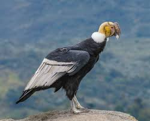

el cóndor andino
 El cóndor andino (Vultur gryphus), ave nacional de Colombia y símbolo de su escudo, se encuentra en peligro crítico de extinción en el país, con una población estimada de 60 a 100 individuos, principalmente en la Sierra Nevada de Santa Marta.
Amenazas
Pérdida de hábitat. Envenenamiento. Caza ilegal.